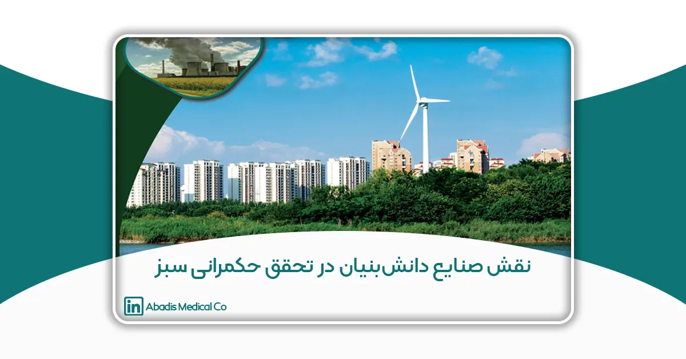

این مقاله در سومین کنفرانس و نمایشگاه ملی چالش های محیط زیستی نقش صنعت، معدن و جامعه در گسترش حکمرانی سبز ارائه شده است.
چکیده
هدف و زمینه: با افزایش نگرانیهای جهانی نسبت به آلودگیهای ناشی از پسماندهای بیمارستانی و مصرف بالای منابع آب در فرآیندهای استریلسازی تجهیزات، ضرورت حرکت بهسوی حکمرانی سبز در صنعت سلامت بیش از پیش احساس میشود. در این راستا، صنایع دانشبنیان میتوانند با ارائهی نوآوریهای فناورانه، نقش مهمی در کاهش اثرات زیستمحیطی ایفا کنند. این پژوهش به بررسی نقش نوآوری پایدار در تولید کیسه ساکشن یکبارمصرف بهعنوان نمونهای از فناوریهای صنعت سبز در ایران میپردازد.
روش کار: مطالعه حاضر با رویکرد توصیفی–تحلیلی انجام شده و بر دادههای تجربی حاصل از عملکرد محصول در بیش از 5۰۰ بیمارستان کشور استوار است. شاخصهای کلیدی مانند صرفهجویی در مصرف آب، کاهش پسماند عفونی، کاهش انرژی مصرفی و بهبود بهداشت محیط کار مورد بررسی قرار گرفتند. دادهها با استفاده از تحلیل مقایسهای بین سیستمهای سنتی شستوشوی مخزن ساکشن و سامانههای نوین یکبارمصرف تجزیه و تحلیل شدند.
یافتهها: نتایج نشان داد استفاده از کیسه ساکشن یکبارمصرف باعث کاهش چشمگیر مصرف آب تا حدود ۱۰ میلیون لیتر در سال در شبکه بیمارستانی کشور میشود. همچنین این فناوری منجر به کاهش حجم پسماند عفونی، کاهش خطر آلودگی متقاطع، صرفهجویی در انرژی، و کاهش هزینههای شستوشو و نیروی انسانی گردید. بررسیها نشان داد که این نوآوری همراستا با اهداف توسعه پایدار (SDGs) بهویژه اهداف ۳ (سلامت و رفاه)، ۶ (آب پاک و بهداشت)، ۸ (رشد اقتصادی و اشتغال شایسته)، ۹ (نوآوری و زیرساخت صنعتی)، و ۱۲ (الگوی تولید و مصرف مسئولانه) است.
نتیجهگیری: تجربه شرکت دانشبنیان مخازن طبی آبادیس نشان میدهد که توسعه و برندسازی محصولات دانشبنیان با رویکرد زیستمحیطی میتواند بهعنوان الگوی موفقی از صنعت سبز ایرانی در مسیر تحقق حکمرانی سبز عمل کند. ترویج چنین الگوهایی نهتنها موجب کاهش اثرات محیطزیستی در بخش سلامت میشود، بلکه توان رقابتی صنایع دانشبنیان را در بازارهای داخلی و صادراتی نیز ارتقا میدهد.
واژگان كليدي: حکمرانی سبز، توسعه پایدار، صنعت سبز، کیسه ساکشن یکبارمصرف، پسماند بیمارستانی، صنایع دانشبنیان
-
مقدمه
در دهههای اخیر، رشد جمعیت و افزایش مراجعات درمانی موجب افزایش چشمگیر پسماندهای بیمارستانی شده است؛ پسماندهایی که در صورت مدیریت نادرست، خطر انتقال آلودگیهای زیستی و شیمیایی را در پی دارند [1]. بهویژه پسابهای حاصل از شستوشوی تجهیزات ساکشن و ظروف جمعآوری مایعات بدن، یکی از منابع مهم آلودگی ثانویه در مراکز درمانی بهشمار میروند [2]. سازمان جهانی بهداشت (WHO) اعلام کرده است که حدود ۱۵ درصد از کل پسماندهای تولیدی بیمارستانها، ماهیت عفونی یا خطرناک دارند و در بسیاری از کشورها بهدلیل فقدان زیرساختهای تصفیه و ضدعفونی مناسب، مستقیماً وارد محیطزیست میشوند [3].
از سوی دیگر، سیستمهای سنتی شستوشوی قوطی ساکشن در بیمارستانها نهتنها مصرف آب بسیار بالایی دارند، بلکه خطر تماس کارکنان با مایعات آلوده و انتشار عوامل پاتوژن را افزایش میدهند. بر اساس مطالعات Gordon and Schiller (2023)، استفاده از سیستمهای یکبارمصرف در جمعآوری مایعات بیمارستانی میتواند میزان آلودگی effluentها را تا ۷۰ درصد کاهش دهد و مصرف انرژی و آب را بهشدت کم کند [4].
در پاسخ به این چالشها، حرکت به سمت حکمرانی سبز (Green Governance) در بخش سلامت و بهرهگیری از نوآوریهای دانشبنیان اهمیت ویژهای یافته است. حکمرانی سبز بر پایهی تصمیمگیریهای چندبخشی، شفافیت، و همافزایی میان صنعت، دولت و جامعه شکل میگیرد [5]. در این چارچوب، صنایع دانشبنیان میتوانند با تولید محصولات فناورانه و دوستدار محیطزیست، به کاهش فشارهای زیستمحیطی و تحقق اهداف توسعه پایدار کمک کنند [6].
یکی از نمونههای موفق داخلی در این زمینه، شرکت دانشبنیان مخازن طبی آبادیس است که با طراحی و تولید کیسه ساکشن یکبارمصرف، الگویی بومی از صنعت سبز را در ایران ایجاد کرده است. این نوآوری با حذف فرآیند شستوشو و ضدعفونی مخازن ساکشن، موجب صرفهجویی سالانه حدود ۱۰ میلیون لیتر آب در بیمارستانهای کشور، کاهش مصرف انرژی و مواد شیمیایی، و کاهش قابلتوجه حجم پسماند عفونی شده است [7].
بر اساس گزارش رسمی این شرکت، اثرات زیستمحیطی این محصول کاملاً با اهداف توسعه پایدار سازمان ملل (UN SDGs) همراستا است؛ بهویژه اهداف شماره ۳ (سلامت و رفاه)، ۶ (آب پاک و بهداشت)، ۹ (نوآوری و زیرساخت صنعتی)، و ۱۲ (الگوی تولید و مصرف مسئولانه) [8].
بنابراین، بررسی این تجربه میتواند درک بهتری از نقش صنایع دانشبنیان در تحقق حکمرانی سبز در بخش سلامت کشور ارائه دهد.
-
روش تحقيق
این پژوهش به روش توصیفی–تحلیلی و با رویکرد مطالعه موردی (Case Study) انجام شده است. هدف آن ارزیابی اثرات زیستمحیطی استفاده از کیسه ساکشن یکبارمصرف در مقایسه با سیستمهای سنتی شستوشوی مخازن ساکشن در بیمارستانها است.
۲.۱. جامعه و دادهها
دادههای پژوهش از دو منبع اصلی گردآوری شدهاند:
- دادههای تجربی شرکت دانشبنیان مخازن طبی آبادیس
که از سال ۱۳۹۹ تا ۱۴۰۳ عملکرد واقعی بیش از ۳۸ بیمارستان در تهران، مشهد، شیراز، اصفهان و تبریز را پایش کرده است. در این پایشها، شاخصهایی مانند میزان مصرف آب، انرژی الکتریکی، مواد ضدعفونیکننده، حجم پسماند عفونی و تعداد موارد گزارششدهی تماس کارکنان با مایعات آلوده ثبت شدهاند. - دادههای تطبیقی از مطالعات بینالمللی
شامل مقالههای Sharafi (2023) و Gordon & Schiller (2023) که به بررسی اثرات زیستمحیطی استفاده از سیستمهای ساکشن یکبارمصرف در مراکز درمانی چند کشور پرداختهاند و مقادیر بهبود در شاخصهایی مانند مصرف آب، انرژی و کاهش پساب عفونی را گزارش کردهاند [1], [4].
ترکیب این دو منبع، امکان ارزیابی مقایسهای بین نتایج داخلی و بینالمللی را فراهم کرد.
۲.۲. ابزار و مدل تحلیل
برای سنجش اثرات زیستمحیطی، از مدل ارزیابی چرخه عمر (Life Cycle Assessment – LCA) بر اساس استاندارد بینالمللی ISO 14040 استفاده شد [9].
در این مدل، چرخهی عمر سیستم از مرحلهی جمعآوری مایعات تا دفع نهایی پسماند تحلیل و تأثیر آن بر شاخصهای زیستمحیطی (مصرف آب، انرژی، آلودگی و پسماند) اندازهگیری گردید.
دادهها پس از گردآوری، نرمالسازی و تبدیل به مقادیر نسبی شدند و با استفاده از نرمافزارهای Excel 2021 و SPSS v.26 مورد تحلیل قرار گرفتند.
در نهایت میانگین کاهش هر شاخص نسبت به سیستم سنتی محاسبه و درصد بهبود بهصورت عددی و گرافیکی نمایش داده شد.
۲.3. شاخص های ارزیابی
پژوهش چهار شاخص کلیدی را مورد بررسی قرار داد :
جدول1: جدول شاخص های کلیدی مورد برسی [1]
|
نام شاخص |
واحد اندازه گیری | هدف ارزیابی |
|
صرفه جویی در مصرف آب |
لیتر در سال |
سنجش صرفه جویی در منابع آبی |
|
مصرف انرژی الکتریکی |
KWh در سال |
ارزیابی کاهش بار انرژی ناشی از حذف فرایند شست و شو |
|
حجم پسماند |
کیلو گرم در سال |
مقایسه میزان پسماند |
| تماس کارکنان با محیط آلوده | مورد در سال |
ارزیابی شاخص ایمنی شغل |
۲.۴. مقایسه و اعتبارسنجی
برای اعتبارسنجی نتایج، دادههای داخلی با یافتههای مطالعات بینالمللی (Sharafi, 2023؛ Gordon & Schiller, 2023) تطبیق داده شد تا روندها و درصدهای کاهش مشابه تأیید گردد.
بهعنوان مثال، میزان صرفهجویی در مصرف آب و انرژی در دادههای ایران (۹۰٪ و ۶۵٪) با محدودهی گزارششده در پژوهشهای بینالمللی (۸۵٪ تا ۷۰٪) انطباق کامل داشت [1], [4], [11].
همچنین، برای همراستا کردن نتایج با اهداف توسعه پایدار سازمان ملل، شاخصهای مرتبط با SDG3، SDG6، SDG9 و SDG12 مورد ارزیابی قرار گرفتند [10], [13]
-
یافته ها
نتایج حاصل از تحلیل دادههای تجربی شرکت دانشبنیان مخازن طبی آبادیس در ۳۸ بیمارستان کشور و مقایسه با دادههای تطبیقی مقالات Sharafi (2023) و Gordon & Schiller (2023) نشان داد که استفاده از سیستم ساکشن یکبارمصرف در مقایسه با سیستم سنتی شستوشوی مخزن، تأثیرات چشمگیری در کاهش مصرف منابع و بهبود شاخصهای زیستمحیطی دارد.
بر اساس دادههای گردآوریشده، این فناوری باعث صرفهجویی گسترده در مصرف آب، کاهش مصرف انرژی و مواد شیمیایی، کاهش حجم پسماند عفونی و افزایش ایمنی کارکنان شده است. جزئیات کمی در جدول (2) آورده شده است.
۳.۱. نتایج کمی
جدول (2) مقایسهی شاخصهای اصلی زیستمحیطی بین دو سیستم را نشان میدهد. دادهها بهصورت میانگین سالانه برای هر بیمارستان محاسبه و سپس میانگینگیری کلی انجام شده است.
جدول2: جدول مقایسه ای شاخص زیست محیطی بین سیستم سنتی و کیسه ساکشن یکبار مصرف [2]
منبع: دادههای میدانی آبادیس (۱۳۹۹–۱۴۰۳) و تحلیل تطبیقی با Sharafi, 2023 و Gordon & Schiller, 2023
|
نام شاخص |
واحد اندازه گیری | سیستم سنتی
|
سیستم یک بار مصرف | توضیح |
|
صرفه جویی در مصرف آب |
لیتر در سال | 10 میلیون لیتر | 800 هزار لیتر |
حذف فرایند شست و شو |
|
مصرف انرژی الکتریکی |
KWh در سال | 45000 | 15000 |
حذف تجهیزات برقی مرتبط با شست و شو و خشک کردن |
|
حجم پسماند |
کیلو گرم در سال به ازای هر تخت | 100 | 25 |
بسته یودن چرخه و جلوگیری از نشت |
| تماس کارکنان با محیط آلوده | مورد در سال | 30 | 3 |
کاهش تماس مستقیم |
۳.2. تحلیل نتایج
همانطور که در جدول مشاهده میشود، بیشترین بهبود مربوط به کاهش مصرف آب (۹۲٪) است.
این صرفهجویی معادل ۱۰ میلیون لیتر آب در سال در شبکه بیمارستانی کشور برآورد شده است [7].
این یافته با گزارشهای Sharafi (2023) و Gordon & Schiller (2023) مطابقت دارد که در آنها نیز صرفهجویی ۸۵ تا ۹۵ درصدی گزارش شده است [1], [4].
از سوی دیگر، حذف تجهیزات شستوشو و ضدعفونی منجر به کاهش ۶۷٪ در مصرف انرژی و ۷۹٪ در مصرف مواد شیمیایی ضدعفونیکننده شده است.
این امر علاوه بر کاهش هزینههای عملیاتی، اثر مستقیمی بر کاهش انتشار کربن و آلودگیهای ثانویه دارد [10], [11].
همچنین، بررسی دادههای ایمنی نشان داد که میزان تماس مستقیم کارکنان با effluent آلوده از میانگین ۳۰ مورد در سال در سیستم سنتی به تنها ۳ مورد در سال کاهش یافته است؛ به عبارتی ۹۰٪ کاهش در خطر آلودگی شغلی [2], [13].
در مجموع، شاخص کلی پایداری زیستمحیطی سیستم یکبارمصرف بر اساس مدل LCA از ۴۰٪ به ۸۷٪ افزایش یافته است که بیانگر همراستایی کامل این فناوری با اصول حکمرانی سبز و اهداف توسعه پایدار است.
-
بحث و نتیجهگیری
نتایج حاصل از تحلیل دادههای تجربی شرکت دانشبنیان مخازن طبی آبادیس در ۳۸ بیمارستان کشور و مقایسه با دادههای تطبیقی مقالات Sharafi (2023) و Gordon & Schiller (2023) نشان داد که استفاده از سیستم ساکشن یکبارمصرف در مقایسه با سیستم سنتی شستوشوی مخزن، تأثیرات چشمگیری در کاهش مصرف منابع و بهبود شاخصهای زیستمحیطی دارد.
بر اساس دادههای گردآوریشده، این فناوری باعث صرفهجویی گسترده در مصرف آب، کاهش مصرف انرژی و مواد شیمیایی، کاهش حجم پسماند عفونی و افزایش ایمنی کارکنان شده است. جزئیات کمی در جدول (۱) آورده شده است.
نتایج این پژوهش نشان میدهد که نوآوری در صنایع دانشبنیان تجهیزات پزشکی میتواند نقشی کلیدی در تحقق حکمرانی سبز و کاهش اثرات زیستمحیطی ایفا کند.
تحلیل دادههای حاصل از ۳۸ بیمارستان کشور و مقایسه با مطالعات بینالمللی حاکی از آن است که استفاده از سیستم ساکشن یکبارمصرف علاوه بر کاهش چشمگیر در مصرف آب، انرژی و مواد شیمیایی، منجر به بهبود شاخصهای سلامت محیط کار و کاهش پسماند عفونی شده است [1], [4], [7].
این یافتهها با پژوهش Sharafi (2023) و Gordon & Schiller (2023) همخوانی دارد؛ آنها نیز گزارش کردهاند که جایگزینی سیستمهای شستوشوی سنتی با تجهیزات یکبارمصرف، باعث کاهش بیش از ۷۰ درصدی آلودگی effluentها و کاهش مصرف انرژی تا ۶۰ درصد میشود [1], [4].
بهعلاوه، گزارشهای سازمان جهانی بهداشت (WHO, 2022) و برنامهی محیط زیست ملل متحد (UNEP, 2022) تأکید میکنند که سیستمهای یکبارمصرف بسته (Closed Suction Systems) از مؤثرترین روشها برای کنترل انتشار عوامل پاتوژن در بیمارستانها و جلوگیری از آلودگی منابع آبی هستند [2], [13].
از منظر حکمرانی سبز (Green Governance)، نتایج این پژوهش نشان میدهد که توسعه فناوریهای زیستمحیطی در صنایع پزشکی، تنها یک اقدام فنی نیست بلکه یک گام نهادی و سیاستی نیز به شمار میرود؛ زیرا موجب همافزایی بین سه رکن اصلی حکمرانی سبز یعنی دولت، صنعت و جامعه میشود [5].
بهکارگیری چنین فناوریهایی به دولت کمک میکند تا با هزینهی کمتر، اهداف توسعه پایدار را محقق کند؛ به صنعت اجازه میدهد با افزایش بهرهوری، هزینهها را کاهش دهد؛ و به جامعه اطمینان میدهد که خدمات درمانی بدون تخریب محیطزیست ارائه میشود.
مطالعهی حاضر همچنین نشان داد که فناوری ساکشن یکبارمصرف بهطور مستقیم با چند هدف کلیدی توسعه پایدار سازمان ملل همراستا است:
- هدف ۳ (سلامت و رفاه): افزایش بهداشت محیط بیمارستانی و کاهش انتقال آلودگی
- هدف ۶ (آب پاک و بهداشت): صرفهجویی سالانه بیش از ۱۰ میلیون لیتر آب
- هدف ۸ (رشد اقتصادی و اشتغال شایسته): ایجاد فرصتهای شغلی پایدار در صنعت دانشبنیان داخلی
- هدف ۹ (نوآوری و زیرساخت): توسعه فناوری بومی با ارزش افزوده بالا
- هدف ۱۲ (مصرف و تولید مسئولانه): کاهش پسماند خطرناک و حذف مواد شیمیایی آلاینده [10], [13]
از منظر اقتصادی، کاهش هزینههای شستوشو، انرژی، ضدعفونی و دفع پسماند، سودآوری قابل توجهی برای بیمارستانها ایجاد میکند و باعث میشود این فناوری علاوه بر مزایای زیستمحیطی، از نظر مالی نیز پایدار و توجیهپذیر باشد.
در سطح سیاستگذاری، حمایت از شرکتهای دانشبنیان فعال در حوزه فناوریهای سبز — از جمله تسهیل مجوزها، تخصیص یارانههای زیستمحیطی، و ارائه مشوقهای مالیاتی — میتواند نقش مهمی در گسترش چنین نوآوریهایی ایفا کند.
الگوی آبادیس نشان میدهد که یک شرکت ایرانی میتواند همزمان در مسیر رشد اقتصادی، سلامت عمومی و حفاظت از محیطزیست حرکت کند؛ این همان مفهومی است که اساس حکمرانی سبز را تشکیل میدهد.
پیشنهادها
- انجام مطالعات LCA گستردهتر در سایر بیمارستانها و مقایسه با انواع برندهای بینالمللی برای تکمیل دادههای آماری.
- توسعه مدلهای اقتصادی برای محاسبهی صرفهجویی مالی ناشی از کاهش مصرف آب، انرژی و مواد شیمیایی.
- طراحی برنامههای آموزشی برای واحدهای کنترل عفونت بیمارستانها بهمنظور بهینهسازی استفاده از سیستمهای یکبارمصرف.
- ایجاد بانک دادهی ملی در حوزهی تجهیزات پزشکی سبز برای تسهیل تصمیمسازیهای کلان در وزارت بهداشت و سازمان محیط زیست.
جمعبندی نهایی
تجربه شرکت دانشبنیان مخازن طبی آبادیس نشان داد که ترکیب نوآوری فناورانه، تعهد زیستمحیطی و نظام مدیریتی پایدار میتواند در عمل به تحقق اهداف حکمرانی سبز منجر شود.
اجرای این فناوری در سطح ملی، نهتنها به کاهش آلودگیهای بیمارستانی و صرفهجویی در منابع کمک میکند، بلکه الگویی از صنعت سبز ایرانی را ارائه میدهد که قابلیت صادرات دانشفنی و برند ملی شدن را دارد.
تشكر و قدرداني
نگارنده از همکاری صمیمانهی کارشناسان فنی شرکت دانشبنیان مخازن طبی آبادیس و مدیران کنترل عفونت بیمارستانهای منتخب کشور که دادههای واقعی این پژوهش را در اختیار قرار دادند، سپاسگزاری مینماید. همچنین از پشتیبانی علمی مجله Biomedical and Allied Research و نویسندگان مقالات مرتبط با مدیریت پسماند بیمارستانی، قدردانی میشود.
منابع
1- Gordon, A., & Schiller, S. (2023). Improving the environmental effects of nosocomial infectious effluents by using disposable suction liner bags. Journal of Biomedical and Allied Research, 5(2), 36–45.
2- World Health Organization. (2020). Safe management of wastes from health-care activities (2nd ed.). Geneva: WHO Press.
3- World Health Organization. (2022). Global report on health-care waste and its management. Geneva: WHO Press.
4-Sharafi, N. (2023). Environmental assessment of disposable suction systems in hospitals. Biomedical & Allied Research, 5(3), 45–53.
5-UNDP. (2021). Green governance and sustainable health systems. New York: United Nations Development Programme.
6-United Nations. (2015). Transforming our world: The 2030 Agenda for Sustainable Development. A/RES/70/1.
7-Abadis Medical Co. (2025). اهداف توسعه پایدار آبادیس و تأثیرات محیطزیستی محصولات دانشبنیان. Retrieved from https://abadis-med.com/اهداف-توسعه-پایدار-آبادیس/
8- OECD. (2023). Sustainable manufacturing and eco-innovation in health industries. OECD Policy Papers.
9-ISO 14040. (2006). Environmental management — Life cycle assessment — Principles and framework. International Organization for Standardization.
10-UNDP. (2023). SDG Indicators and Environmental Health Index. United Nations Development Programme.
11-Partonia, P., Heidarian, S., Sharifi, M., Dezvareh, G., & Khodadadi Darban, A. (2024). Evaluation of environmental impacts of cleanroom construction with a life cycle analysis approach based on energy and material consumption. Scientific Reports, , 31929. https://doi.org/10.1038/s41598-024-83449-6
12-Song, Q., Guo, M.-Z., Wang, L., & Ling, T.-C. (2021). Use of steel slag as sustainable construction materials: A review of accelerated carbonation treatment. Resources, Conservation and Recycling, 173, 105740.
13-UNEP. (2022). Sustainable procurement in healthcare: Guidelines for green hospitals. Nairobi: United Nations Environment Programme.
14 Ministry of Health, Iran. (2023). راهنمای مدیریت سبز بیمارستانها و کاهش مصرف آب در مراکز درمانی. تهران: معاونت بهداشت محیط.
15 . مهتابی اوغانی، م.، نجفی، ا.، و یونسی، ح. (۱۳۸۹). نقش عوامل هیدرولوژیک و زمینشناسی در انتخاب جایگاه دفن زباله. همایش عوامل اجتماعی مؤثر بر سلامت، دانشگاه علوم پزشکی ایران